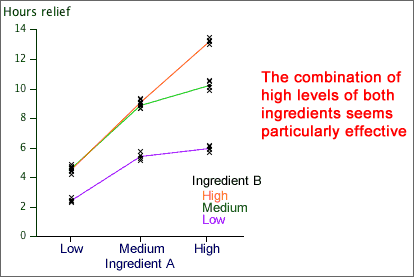

Hay fever relief
A study was conducted to investigate the effect of a drug compound in providing
relief for hay fever. In the experiment, two active ingredients (A and B)
were each varied at 3 levels in a factorial design with 4 replicates. There
were 36 hay fever sufferers available and they were randomly allocated to
the 9 treatment combinations. The table below shows the hours of relief
that the subjects reported.
| |
Ingredient A |
| Ingredient B |
Low |
Medium |
High |
| Low |
|
|
|
| Medium |
|
|
|
| High |
|
|
|
The diagram below shows the data and the means hours of relief for the different treatments. Since the lines are not parallel, there seems to be interaction between the effects of the ingredients.
